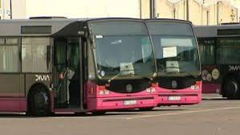
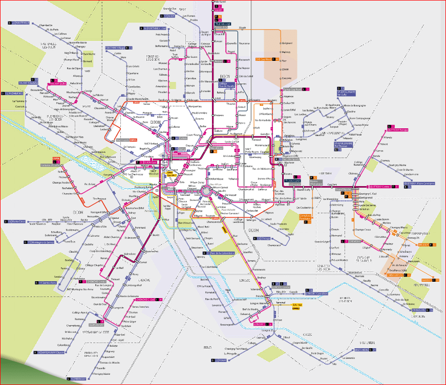
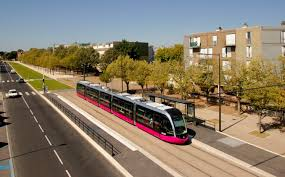
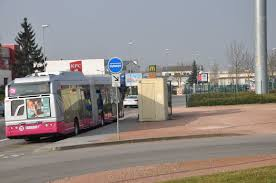
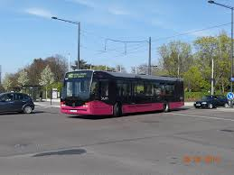
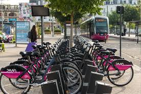

TRANSPORT
Présentation
-
Lancé le 25 octobre 2004, le réseau Divia a apporté de nombreux changements par rapport à l'ancien réseau de bus de la Société de transport de la région dijonnaise (STRD); nouveau réseau, nouveau nom, nouvelle identité pour les bus, nouveaux bus au GNV, nouvelles communes desservies, etc.
Le réseau Divia a été adopté par l'ensemble de la population de l'Agglomération Dijonnaise, malgré les nombreux ennuis et débats que ces changements ont suscités. La fréquentation était de 44 935 000 de voyages en 2018 soit 174 voyages par habitant et par an. D'après le conseil de communauté du 30 janvier 2014, la fréquentation a augmenté de 20,5 % sur l'année 2013 par rapport à l'année 2012, puis de 9,7 % les deux années suivantes. -
En 2007, le Grand Dijon met en place le SAEIV (Système d'Aide à l'Exploitation et à l'Information Voyageurs) sur le réseau Divia sous le nom Totem : des bornes d'information sont installées aux principaux arrêts et le SAEIV Inéo est installé dans l'ensemble de la flotte de bus.
Les bornes permettent d'informer les voyageurs sur le temps d'attente aux arrêts. Dans les bus, des écrans TFT indiquent le nom de chaque arrêt et la destination, le temps nécessaire pour rejoindre les principaux lieux desservis par la ligne, ainsi que les perturbations sur le réseau. Une annonce sonore est également présente dans les bus. - Le 12 juillet 2010, le réseau Divia a été restructuré, nouvelles lignes, dessertes améliorées, ligne effectuant le tour de la ville, ligne de nuit, et modifications d'itinéraires en vue des travaux du tramway.
- Le 2 septembre 2012, lendemain de l'inauguration de la première ligne de tramway, une nouvelle réorganisation du réseau a lieu, lui donnant cette fois-ci un caractère plus définitif, les travaux du tramway étant terminés
- En 2017, la gestion des transports en commun (DiviaBus&Tram), du stationnement (DiviaPark et DiviaVéloPark) et des vélos en libre-service (DiviaVélodi) et en location longue durée (DiviaVélo) de Dijon Métropole est regroupée sous le nom commercial de DiviaMobilités.
Communes desservies

Le réseau Divia dessert les 24 communes de Dijon Métropole.
En 2004 lors de la mise en service du réseau Divia, les communes de Bressey-sur-Tille, Bretenière, Crimolois, Hauteville-lès-Dijon, Magny-sur-Tille ont rejoint les autres communes de Dijon Métropole, appelé COMADI jusqu'en 2005, et desservies par l'ancien réseau STRD.
En 2007, la commune de Fénay rejoint le Grand Dijon et le réseau Divia.
En 2013, les communes de Corcelles-les-Monts et de Flavignerot rejoignent le Grand Dijon (qui sera par la suite transformée en communauté urbaine en 2015 et en métropole en 2017 sous le nom de Dijon Métropole) et le réseau Divia.
Liste des communes desservies :
- Ahuy
- Bressey-sur-Tille
- Bretenière
- Chenôve
- Chevigny-Saint-Sauveur
- Crimolois
- Corcelles-les-Monts
- Daix
- Dijon
- Fénay
- Flavignerot
- Fontaine-lès-Dijon
- Hauteville-lès-Dijon
- Longvic
- Magny-sur-Tille
- Marsannay-la-Côte
- Neuilly-lès-Dijon
- Ouges
- Perrigny-lès-Dijon
- Plombières-lès-Dijon
- Quetigny
- Saint-Apollinaire
- Sennecey-lès-Dijon
- Talant
Une restructuration moins générale du réseau a eu lieu le dimanche 3 septembre 20123, en même temps que l'arrivée de la première ligne du tramway et au lendemain de l'inauguration de cette dernière. La deuxième ligne du tramway est ouverte depuis le 8 décembre 2012. Cet évènement s'accompagne de la mise en place de la nouvelle billettique sans contact, qui a été mise en service à partir du 18 juin 2012. Elle est utilisable dans un premier temps sur les réseaux Divia et Transco, et, dans un plus long terme, sur le réseau TER Bourgogne, le système de location de vélo DiviaVelodi ainsi que d'autres réseaux de transports bourguignon.
Tramway

Le réseau comporte deux lignes de tramway, dont voici les terminus :
- T1: DIJON Gare — QUETIGNY Centre
- T2: DIJON Valmy — CHENÔVE Centre
Lignes à niveau élevé de service (Lianes)
Le réseau comporte 5 lignes structurantes, appelées « lianes », transversales pour la plupart, reliant les quartiers d'habitation les plus denses de l'agglomération, ses principaux équipements et toutes les communes de plus de 8 000 habitants. Elles circulent de 5 h 15 à 0 h 40 du lundi au samedi, et de 6 h 40 à 0 h 40 le dimanche. Ce sont les seules lignes du réseau qui fonctionnent aussi bien le dimanche matin qu'en soirée. Le but principal des 5 lianes est de compléter le tramway avec des fréquences régulières de passages en semaine. Note : La fréquentation annuelle indiquée est celle de 2018, selon le rapport du délégataire.
Lignes

Les lignes 10 à 22 desservent des communes et quartiers non-desservis par les Lianes et assurent la desserte de proximité. Elles permettent soit de se rendre directement au centre-ville, soit d'avoir une correspondance avec une liane ou le tram. Elles circulent de 5 h 30 à 21 h 00 du lundi au samedi et de 13 h 00 à 21 h 00 le dimanche, pour la plupart. Note : La fréquentation annuelle indiquée est celle de 2018, selon le rapport du délégataire.
Proxi
Les lignes Proxi desservent les communes les plus rurales. Certains services sont réguliers, d'autres fonctionnent à la demande sur réservation la veille.
Flexo

Les Flexo sont des lignes semi-virtuelles avec une fréquence régulière. Les lignes ont un itinéraire et des arrêts fixes qui aboutissent dans une zone géographique. Dans cette zone, il y a des arrêts à la demande desservis sur demande des passagers. Au départ des terminus Toison d'Or et République, il n'est pas nécessaire de réserver, contrairement du côté la ZAE Cap Nord, où il faut réserver par téléphone et préciser l'arrêt de départ. La nouvelle ligne 41 reprend le même principe, il n'est pas nécessaire de réserver aux terminus, uniquement pour 4 arrêts au retour.
Nouveauté de la rentrée 2014, la ligne 42 remplace totalement la ligne 23 et se prolonge jusqu'à l'ancien terminus de la ligne 4, dans la zone commerciale de Chenôve.
Le nombre d'arrêts dans la ZAE Cap Nord est de 20, il y en a 8 dans les zones d'activités de Chevigny-Saint-Sauveur. Actuellement, la ligne 42 ne comporte aucun arrêt à la demande, elle a été numérotée comme ligne Flexo dans l'éventualité d'une desserte de la zone industrielle de Chenôve. Depuis la rentrée 2017, la ligne 41 ne compte plus d'arrêt à la demande et a été prolongée pour améliorer la régularité et la ponctualité.
Corol
La ligne Corol est une ligne de rocade qui assure des liaisons inter-quartiers. Elle permet d'éviter le centre-ville en contournant Dijon, cette ligne fait correspondance avec les deux lignes de tramway et 4 Lianes le long de son trajet. Elle circule du lundi au samedi de 5 h 15 à 21 h 30. Elle compte environ 8 000 voyages par jour.
City
Complètement modifiée à la suite de la piétonnisation du centre-ville, la navette City permet de relier entre eux les principaux lieux culturels, touristiques et commerciaux ainsi que les différents parkings du centre-ville de Dijon sans passer par les rues piétonnes. Elle fonctionne du lundi au samedi de 7 h 45 à 19 h 15 avec une fréquence 10 minutes. Elle ne circule pas le dimanche.
Pleine Lune
Inspiré du système du même nom présent à Lyon depuis 2006, la ligne Pleine Lune circule de début septembre à fin juin/début juillet, du jeudi au samedi de 1 h 30 à 5 h 30 du matin afin de relier les principaux lieux de vie nocturne de Dijon.
Express
Cette ligne reliait à l'origine la gare de Dijon à l'aéroport et la base aérienne 102 Dijon-Longvic. Mais depuis le 1er septembre 2016 et à la suite de la fermeture de la base, elle relie la gare à l'école de sous-officiers de gendarmerie de Dijon qui s'est installée dans les anciens locaux de la base.
Bus Class'
Les lignes scolaires Bus Class' assurent la liaison entre les communes et les établissements scolaires quand la desserte est impossible par une ligne régulière. Les Bus Class' sont accessibles à tous les voyageurs munis d'un titre de transport Divia.
DiviAccès

Créé en 1983, le service TPMR (Transport des Personnes à Mobilité Réduite) se nomme DiviAccès depuis juin 2006. Ce service est réservé aux personnes ayant un handicap non lié à l'âge, ne pouvant pas se déplacer normalement sur les lignes du réseau. En 2010 par exemple, 800 personnes peuvent bénéficier de ce service, mais seulement 480 habitants de Dijon Métropole en sont utilisateurs. En 2016, 48 000 services annuels ont été effectués pour le compte de 454 personnes. La plupart d’entre eux réalisent moins de 100 voyages par an, certains (salariés, lycéens, étudiants…) l’utilisent quotidiennement. Les minibus, fournis par Dijon Métropole, étaient exploités par la société Transmontagne et le sont désormais par Keolis Dijon Mobilités.
Il existe deux catégories d'utilisateurs :
- les utilisateurs occasionnels qui utilisent ce service pour faire leurs courses, leurs démarches administratives, leurs loisirs… ;
- les utilisateurs réguliers qui utilisent ce service pour les trajets scolaires (étudiants) ou des personnes ayant besoin de se déplacer tous les jours.
Cependant, le service billetique opérationnelle dans les bus et tram depuis le 18 juin 2012 ne sera pas installé dans les taxis et minibus car la gestion de la billetique génère des problèmes. Les clients de ce service garderont donc des tickets papier à acheter en agence ou via internet.
Les minibus DiviAccès doivent être au préalable réservés deux heures avant à la centrale Divia grâce au numéro 03 80 11 29 29 (appel gratuit depuis un poste fixe).
Le service DiviAccès est également valable de 6 h du matin en semaine et de 9 h du matin les dimanches et jours fériés jusqu'à 0 h 15.
Mais ce service n'arrivant plus à suivre car étant victime de son succès, un collectif des usagers DiviAccès, nommé CUDI21, a vu le jour le 15 juin 2011. Deux mois plus tard, CUDI21 dut abandonner la bataille et le collectif fut dissous.
Vélos en libre service DiviaVélodi
DiviaVélodi (mot-valise, contraction du nom du réseau de transports en commun dijonnais, de vélo et de Dijon) est le système de vélos en libre-service de Dijon. Mis en place par Dijon Métropole, il a été inauguré le 29 février 2008 et est exploité par Keolis Dijon Mobilités.
Il compte à ce jour 40 stations en activité, pour près de 400 vélos
Location de vélos DiviaVélo

DiviaVélo est le nom du service de location de vélo (à ne pas confondre avec les vélos en libre service) courte, moyenne et longue durée du réseau Divia. Les durées de location vont de 24 heures à 1 an. Les tarifs vont de 3 € pour 24 heures à 80 € pour un an.
Le point de retrait des vélos se situe à la gare SNCF de Dijon-Ville. À la différence du service DiviaVélodi, il n'y a pas de station fixe pour garer son vélo, on peut emmener ce dernier où l'on veut durant la période de location.
Train
Dijon bénéficie de deux gares SNCF, Dijon Ville et Dijon Porte-Neuve. Les trains TER mettent six minutes pour traverser la ville en reliant les deux gares.